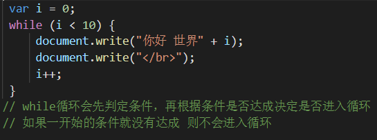
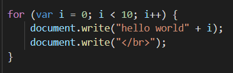

原文连接:https://www.cnblogs.com/gsdnb/p/11420211.html
while循环：
语法：
while (expression) {
code...
}
执行规则：
先对expression（表达式）做判定，如果为真，进入循环执行code，再判定……
如果为假，就不会进入。
注： 如果expression第一次判定为假，则不会进入循环
注: 一定要在code部分修改expression中的内容，以期有朝一日表达式为假。否则就是死循环。

do while循环：
语法：
do {
code...
} while (expression);
执行规则：
先执行一次code，再做判定。与while循环不同，do while 无论条件如何 总会执行一次代码。
注意事项，与while循环相同，一定要在code部分修改expression中的内容，以期有朝一日表达式为假。否则就是死循环。

for 循环:
语法：
for (初始化值; 判定条件; 修改初始化值) {
code...
}
执行过程：

了解完循环结构。我们联系一下分支结构学习几个常见的例子。
-
输出0 ~ 100 之内的所有偶数
<!DOCTYPE html> <html lang="en"> <head> <meta charset="UTF-8"> <meta name="viewport" content="width=device-width, initial-scale=1.0"> <meta http-equiv="X-UA-Compatible" content="ie=edge"> <title>Document</title> </head> <body> <script> for (var i = 0; i <= 100; i++) { // 判定这个数是否是偶数 if (i % 2 === 0) { // 判定方式： 如果能够对2取余得0 说明是2的倍数 就是偶数 console.log(i); } } </script></body></html>
2. 计算1000 ~ 2000年之内的所有闰年
<!DOCTYPE html>
<html lang="en">
<head>
<meta charset="UTF-8">
<meta name="viewport" content="width=device-width, initial-scale=1.0">
<meta http-equiv="X-UA-Compatible" content="ie=edge">
<title>Document</title>
</head>
<body>
<script>
// 闰年的计算条件： 能够被4整除但是不能够被100整除 或者 能够被400整除
// 定义一个计数器 累计找到了多少个闰年
var count = 0;
for (var i = 1000; i <= 2000; i++) {
if (i % 4 === 0 && i % 100 != 0 || i % 400 === 0) {
// 进来了说明是闰年 于是计数器累加
count++;
// console.log("公元" + i + "年是闰年");
document.write("公元" + i + "年是闰年");
if (count % 8 === 0) {
document.write("</br>");
}
}
}
// 思路：从1000 循环到2000 如果是闰年我们要输入到页面中
// 每8个一行 于是我们就得有一种方式累计找到了多少个闰年
// 所以我们就可以定义一个变量 专门用来累计找到的闰年的个数
// 于是定义count 专门累计
// 每当count是8或者8的倍数时 执行一次document.write("</br>")
</script>3. 求100 ~ 999 之内的所有水仙花数 并输出
<!DOCTYPE html>
<html lang="en">
<head>
<meta charset="UTF-8">
<meta name="viewport" content="width=device-width, initial-scale=1.0">
<meta http-equiv="X-UA-Compatible" content="ie=edge">
<title>Document</title>
</head>
<body>
<script>
// 水仙花数： 1个三位数的每一个位数的立方和 等于它自己 这样的数字叫做水仙花数
// ex: 153 = 1 * 1 * 1 + 5 * 5 * 5 + 3 * 3 * 3 125 + 27 + 1
for (var i = 100; i <= 999; i++) {
// 挨个判定每一个数是否是水仙花数
// 先获取个位数 对10求余
var ge = i % 10;
// 再获取十位数
var shi = parseInt(i % 100 / 10);
// 再获取百位数
var bai = parseInt(i / 100);
// console.log(i + "这个数字的百位数是" + bai + "十位数是" + shi + "个位数是" + ge);
if (ge * ge * ge + shi * shi * shi + bai * bai * bai === i) {
console.log(i + "是一个水仙花数");
}
}
</script>
</body>
</html> 4.求0~100之内的所有质数
<!DOCTYPE html>
<html lang="en">
<head>
<meta charset="UTF-8">
<meta name="viewport" content="width=device-width, initial-scale=1.0">
<meta http-equiv="X-UA-Compatible" content="ie=edge">
<title>Document</title>
</head>
<body>
<script>
// 质数: 除了1和它本身之外，没有其它的数能够把它整除 这样的数叫做质数
// 随便定义一个数
var num = +prompt("请输入一个大于2的正整数");
// 定义一个标记变量 这个标记变量负责标记循环中是否有能够整除的数
var isZ = true;
for (var i = 2; i < num; i++) {
if (num % i === 0) {
// 说明从2到10之间是有数可以把11整除的 那么它就不是质数
isZ = false;
}
}
// 判定 isZ 如果为true 说明 循环过程中的if语句没有进入 也就说明没有数可以整除11
if (isZ) {
alert(num + "是质数");
} else {
alert(num + "不是质数");
}
</script>
</body>
</html>